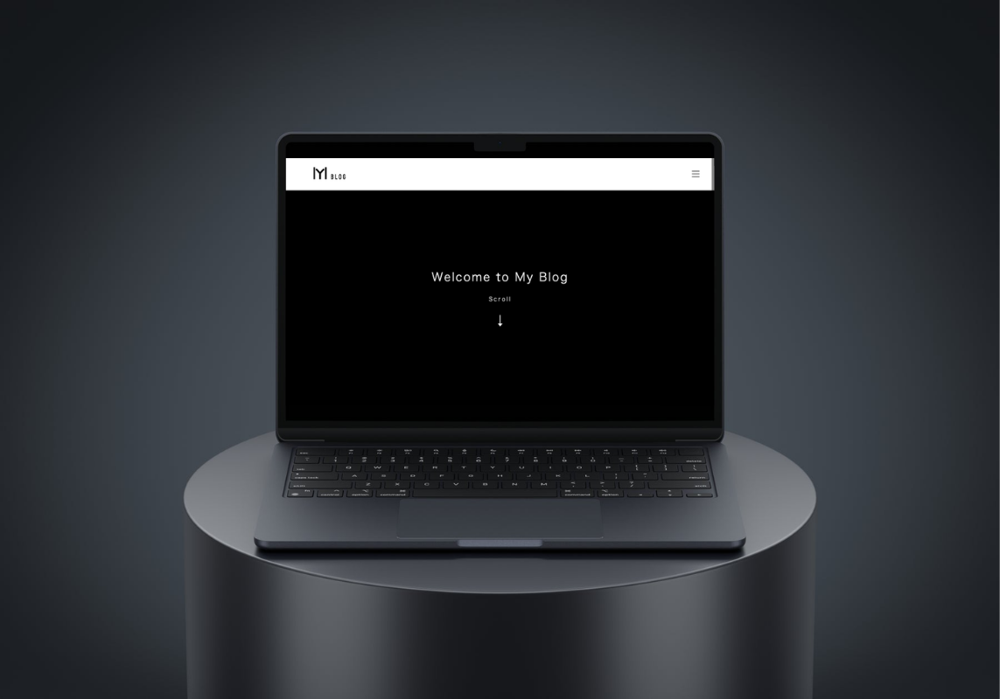
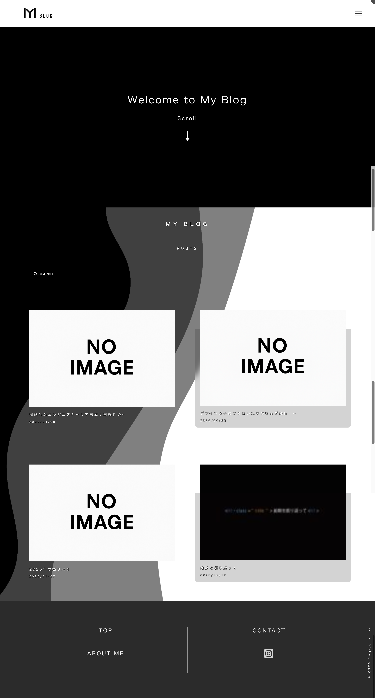
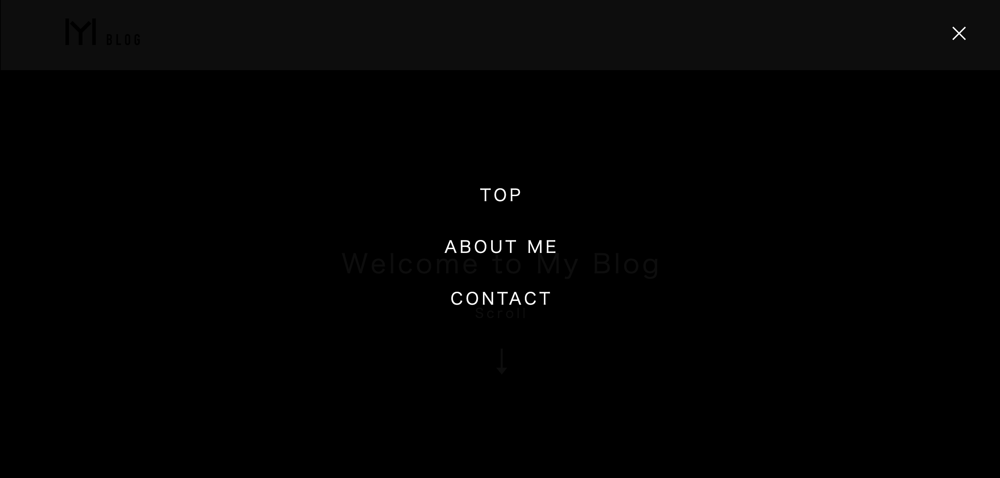

Blog


Overview
本制作は、記事投稿と情報発信を目的としたブログサイトです。 ユーザーが快適に記事を閲覧できるよう、シンプルで視認性の高いデザインと、分かりやすい構成を意識して制作しました。 また、コンテンツの更新や管理がしやすいように設計し、継続的な運用を前提としたサイト構築を行っています。
Purpose
ブログサイトは、継続的に情報を発信していくことが重要なため、「更新のしやすさ」と「読みやすさ」の両立が求められます。 本制作では、ユーザーがストレスなく記事を閲覧できる環境を整えることと、運用者が簡単に記事を追加・管理できる仕組みを構築することを目的としました。 また、自身のスキル向上として、動的なコンテンツ管理やサイト構造の理解を深めることも目的としています。
Target
・記事コンテンツを閲覧する一般ユーザー
・特定の情報を探しているユーザー
・スマートフォンから気軽に閲覧するユーザー
Information Architecture
記事一覧と記事詳細ページを分けることで、ユーザーが目的の情報にスムーズにアクセスできる構成にしています。 トップページでは記事の概要を一覧で確認できるようにし、詳細ページでは内容に集中できるシンプルなレイアウトを採用しました。 また、スマートフォンでの閲覧を意識し、縦スクロール中心のシンプルな構造としています。
Design
・余白を活かしたシンプルで読みやすいデザイン
・視認性の高いフォントサイズと行間設計
・記事に集中できるミニマルなレイアウト
・スマホファーストを意識したUI設計
過度な装飾を避けることで、
コンテンツそのものの価値が伝わるデザインを目指しました。
Point
ユーザーが記事内容に集中できるよう、無駄な要素を排除し、シンプルなUI設計を心がけました。 また、一覧ページから詳細ページへの導線を分かりやすくすることで、直感的に操作できる構造にしています。 さらに、スマートフォンでの閲覧を意識し、文字サイズや余白を調整することで、長時間読んでも疲れにくいデザインを意識しました。
Future Improvements
今後は、カテゴリー分けや検索機能の追加により、より目的の記事を探しやすくする改善を行いたいと考えています。 また、ページ遷移時のアニメーションやUIの細かな調整を行い、ユーザー体験の向上を目指していきたいです。
Reflection
本制作を通して、ユーザーが「読むこと」に集中できる環境を作ることの重要性を学びました。 シンプルなデザインであっても、余白や文字サイズ、配置などの細かな調整によって、使いやすさが大きく変わることを実感しました。 また、継続的に運用することを前提とした設計の重要性についても理解を深めることができました。